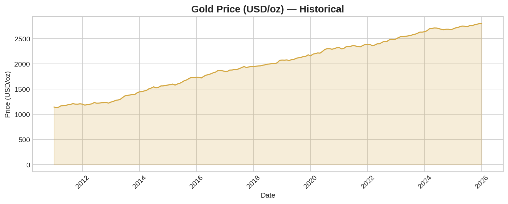
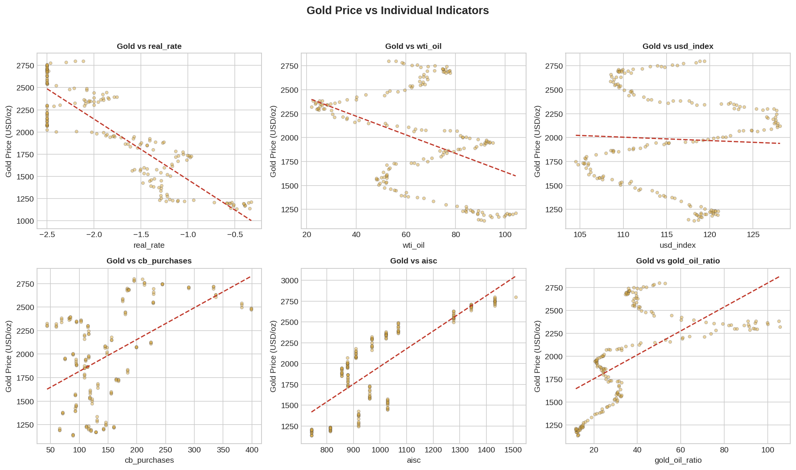
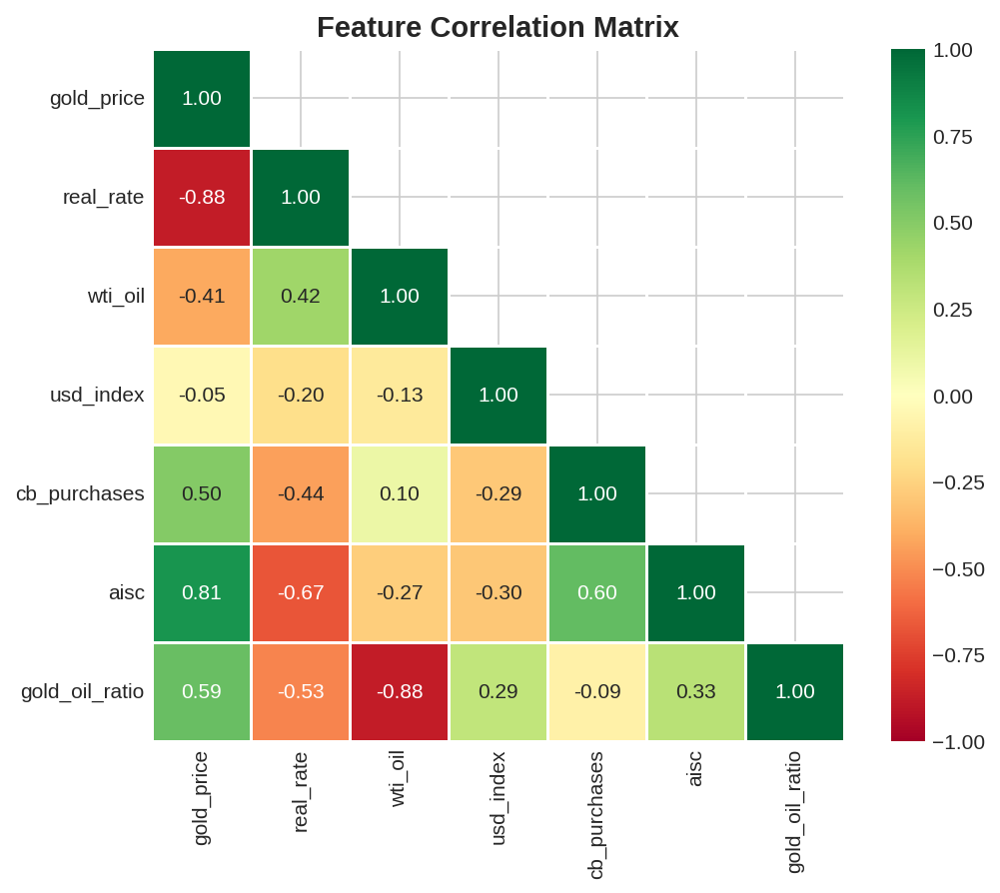
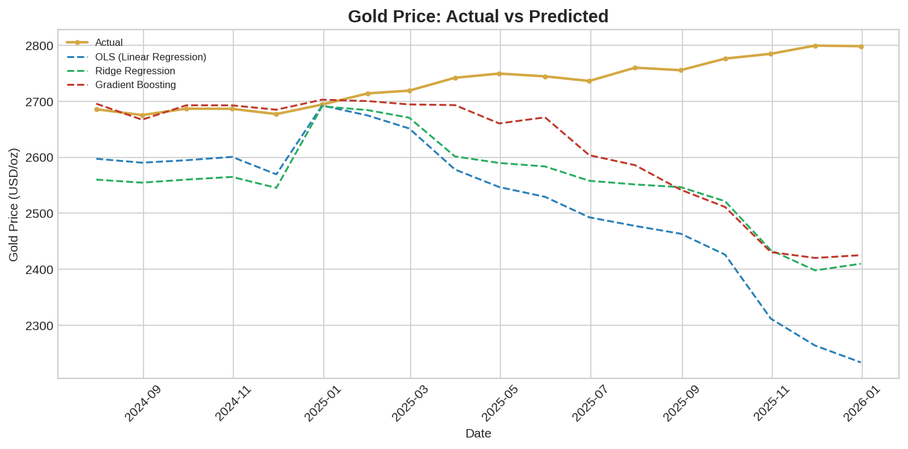
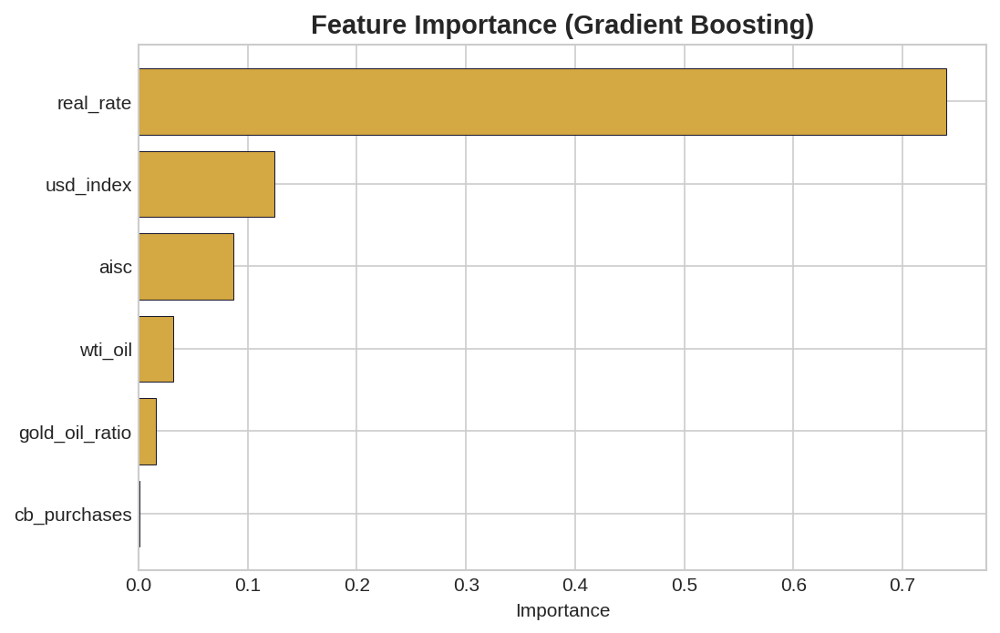
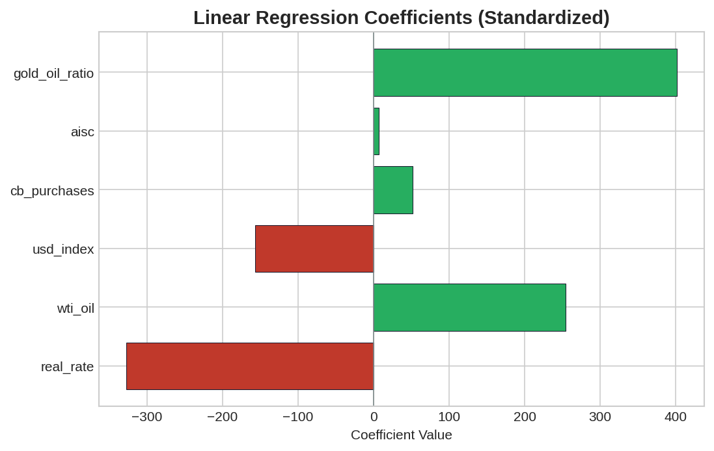

Gold Price Regression Model — 5가지 핵심 경제 지표를 활용한 다중 회귀 분석

2010년부터 현재까지 금 가격 (USD/oz) 추이
금의 가치를 결정하는 핵심 경제 지표들과 그 관계를 분석합니다.
명목 금리에서 물가 상승률을 뺀 값입니다. 금은 이자를 주지 않는 자산이므로, 실질 금리가 높으면 금을 보유할 유인이 줄어들어 가격이 하락합니다. 반대로 실질 금리가 마이너스가 되면 화폐 가치 하락을 방어하기 위해 금값이 상승합니다.
금은 전 세계에서 달러를 대체할 수 있는 유일한 '실물 화폐'로 취급받습니다. 달러가 약세를 보이거나 국가들이 달러 의존도를 낮추려 할 때 금의 가치는 상승합니다. 무역가중 달러 지수(DTWEXBGS)를 사용합니다.
최근 금값 폭등의 가장 큰 원인입니다. 중국, 인도, 중동 등 신흥국 중앙은행들이 외환보유고에서 달러 대신 금을 쓸어 담고 있습니다. 분기별 순매수량(톤)을 지표로 사용합니다.
금을 땅에서 캐내는 데 드는 인건비, 에너지 비용 등의 총비용입니다. 이 채굴 원가가 금값 하락 시 심리적인 '바닥(지지선)' 역할을 합니다. 연간 산업 평균 AISC(USD/oz)를 사용합니다.
유가는 달러로 결제되므로 금과 유사한 달러 가치 반영 자산입니다. 또한 에너지 비용 상승은 채굴 원가 상승으로 이어져 금값을 지지합니다. WTI 원유 선물 가격(USD/배럴)을 사용합니다.

금 가격과 각 지표 간의 산점도 (Scatter plots)
지표들 간의 상관계수를 분석하여 다중공선성 및 관계를 파악합니다.

피처 간 상관관계 히트맵 — 빨간색: 음의 상관, 초록색: 양의 상관
3가지 회귀 모델을 학습하고 마지막 18개월 데이터로 성능을 평가했습니다.
※ 아래 결과는 샘플 데이터 기준입니다. FRED API 키로 실제 데이터를 사용하면 결과가 크게 달라집니다.
| 모델 (Model) | RMSE | MAE | R² |
|---|---|---|---|
| OLS (선형 회귀) | 272.70 | 216.11 | -43.65 |
| Ridge Regression (릿지 회귀) | 206.99 | 175.49 | -24.73 |
| Gradient Boosting (그래디언트 부스팅) | 188.10 | 128.87 | -20.24 |

테스트 기간 금 가격: 실제 vs 예측 (Actual vs Predicted)

Gradient Boosting 피처 중요도

선형 회귀 계수 (표준화)
2010년~2025년 월간(monthly) 데이터를 사용합니다. 일간 시장 데이터(금 가격, 실질 금리, 유가, 달러 지수)는 월말 기준으로 리샘플링하고, 분기/연간 데이터(중앙은행 매수, AISC)는 전방 채움(forward-fill)하여 월간 빈도로 맞춥니다.
OLS (선형 회귀): 기본 베이스라인. 계수의 부호로 경제적 관계를 해석합니다.
Ridge 회귀: 다중공선성(DXY↔유가)을 처리하기 위한 L2 정규화 적용.
Gradient Boosting: 비선형 관계를 포착. n_estimators=200, max_depth=4, learning_rate=0.05.
시계열 특성을 고려하여 랜덤 셔플 없이 마지막 18개월을 테스트 셋으로 분리합니다. RMSE, MAE, R² 지표로 성능을 평가합니다.
FRED (Federal Reserve Economic Data) —
금 가격, 실질 금리, WTI 유가, 달러 지수
World Gold Council —
중앙은행 매수량, AISC 채굴 원가
중앙은행 매수 데이터는 분기별, AISC는 연간 데이터로 월간 보간 시 정밀도가 떨어집니다. 약 150개 월간 데이터포인트로 모델을 학습하므로 과적합에 유의해야 합니다. 지정학적 리스크, 투기적 수요 등 정량화하기 어려운 요인은 모델에 포함되지 않았습니다.